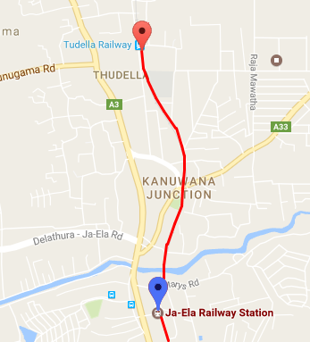

<!--
Generated template for the Details page.

See http://ionicframework.com/docs/v2/components/#navigation for more info on
Ionic pages and navigation.
-->
<ion-header>

    <ion-navbar>
        <ion-title>Details</ion-title>
    </ion-navbar>

</ion-header>


<ion-content padding>
    <ion-card>

        
        <ion-fab right top>
            <button ion-fab>
                <ion-icon name="pin"></ion-icon>
            </button>
        </ion-fab>

        <ion-item>
            <ion-icon name="home" item-left large></ion-icon>
            <h2>Last Station: </h2>
            <p>Thudella</p>
        </ion-item>

        <ion-item>
            <ion-icon name="clock" item-left large ></ion-icon>
            <h2>Destination Time : 08:05 </h2>
            <p>(according to the current situation)</p>
        </ion-item>

        <ion-item>
            <span item-left><small>Arriving in:</small> <b> 04 mins </b></span>
            <span item-right><small>Speed: (Km/h) </small> <b> 48 </b></span>
        </ion-item>

    </ion-card>


</ion-content>
